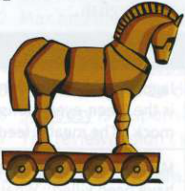
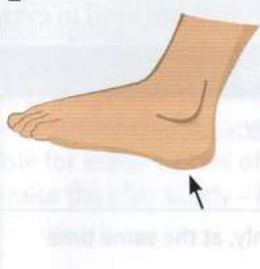
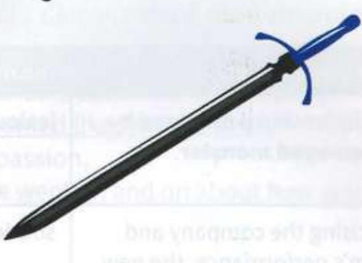
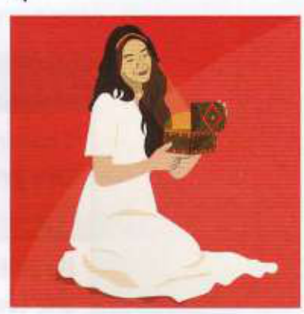
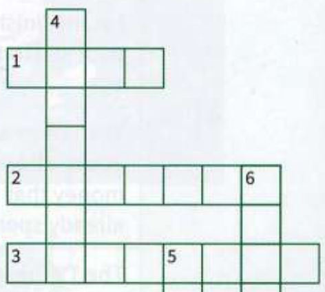

Bài tập
20.1
Nhìn vào Phần A ở trang đối diện. Những bức tranh này gợi cho bạn nghĩ đến những thành ngữ nào?
1

......................................................
2

......................................................
3

......................................................
4

......................................................
20.2
Hoàn thành mỗi câu bằng một thành ngữ từ bài 20.1.
1
New financial regulations are hanging over the banking industry like ................................ ................................... Bankers are extremely worried. (Các quy định tài chính mới đang treo lơ lửng trên ngành ngân hàng như [a sword of Damocles - thanh gươm Damocles / hiểm họa rình rập]. Các chủ ngân hàng đang cực kỳ lo lắng.)
2
One famous type of computer virus works like ............................. It attacks your computer from inside the system. (Một loại vi-rút máy tính nổi tiếng hoạt động giống như [a Trojan horse - ngựa thành Troia / kẻ nội gián]. Nó tấn công máy tính của bạn từ bên trong hệ thống.)
3
He's a good worker in many ways, but planning is his ................................................................................ He's so disorganised. (Anh ấy là một nhân viên giỏi về nhiều mặt, nhưng việc lập kế hoạch là [Achilles' heel - gót chân Achilles / điểm yếu chí mạng] của anh ấy. Anh ấy làm việc rất thiếu tổ chức.)
4
She opened ............................................................................................................... when she started investigating corruption in the building industry. (Cô ấy đã mở ra [Pandora's box - hộp Pandora / nguồn cơn tai họa] khi bắt đầu điều tra tham nhũng trong ngành xây dựng.)
20.3
Hoàn thành ô chữ.
Hàng ngang
1
the writing on the .............................................. (điềm báo tai họa / dấu hiệu rõ ràng trước mắt)
2
a ......................................................... victory (chiến thắng đắt giá / phải trả giá đắt)
3
leave no stone ........................................................ (tìm mọi cách / không bỏ sót bất kỳ manh mối nào)
Hàng dọc
4
......................................................... days (những ngày tháng hoàng kim / những ngày êm đềm hạnh phúc)
5
Don't ....................................................... on your laurels. (Đừng ngủ quên trên chiến thắng.)
6
turn the other .................................. (nhẫn nhịn chịu đựng / đưa cả má bên kia ra)

20.4
Sửa lỗi sai trong các thành ngữ dưới đây.
1
Julia's leaving shot as she walked out of the room was to say that she never wanted to see any of us ever again. (Lời công kích cuối cùng của Julia khi cô ấy bước ra khỏi phòng là nói rằng cô ấy không bao giờ muốn nhìn thấy ai trong chúng tôi nữa [leaving shot - sai, đúng ra phải là parting shot].)
2
The police left no stones unturned in trying to trace the missing child. (Cảnh sát đã tìm mọi cách để cố gắng tìm ra dấu vết của đứa trẻ mất tích [left no stones unturned - sai, đúng ra phải là left no stone unturned].)
3
Piero fell into his sword and accepted full responsibility for the disaster. (Piero đã đứng ra nhận trách nhiệm từ chức và chấp nhận hoàn toàn trách nhiệm về thảm họa [fell into his sword - sai, đúng ra phải là fell on his sword].)
4
She really has the Pandora touch - everything she does is hugely successful. (Cô ấy thực sự có khả năng chạm tay hóa vàng – mọi việc cô ấy làm đều thành công rực rỡ [the Pandora touch - sai, đúng ra phải là the Midas touch].)
5
It was a task of epic size, but everyone tried their hardest to succeed. (Đó là một nhiệm vụ có quy mô cực kỳ lớn, nhưng mọi người đều đã cố gắng hết sức để thành công [epic size - sai, đúng ra phải là epic proportions].)
6
We should continue to work hard and not sleep on our laurels. (Chúng ta nên tiếp tục làm việc chăm chỉ và không ngủ quên trên chiến thắng [sleep on our laurels - sai, đúng ra phải là rest on our laurels].)
7
If we are faced with a violent attack, we should just turn the other face and not react. (Nếu chúng ta phải đối mặt với một cuộc tấn công bạo lực, chúng ta nên nhẫn nhịn chịu đựng và không phản ứng lại [turn the other face - sai, đúng ra phải là turn the other cheek].)
8
Doing nothing at this stage would be like singing while Rome burns. (Không làm gì ở giai đoạn này sẽ giống như thờ ơ trước tai họa vậy [singing while Rome burns - sai, đúng ra phải là fiddling while Rome burns].)
Đến lượt bạn
Sử dụng Internet để tìm hiểu xem các thành ngữ ở phần B bắt nguồn từ đâu. Bạn có thể sử dụng công cụ tìm kiếm như Google hoặc một trang web cụ thể về thành ngữ, ví dụ: www.phrases.org.uk